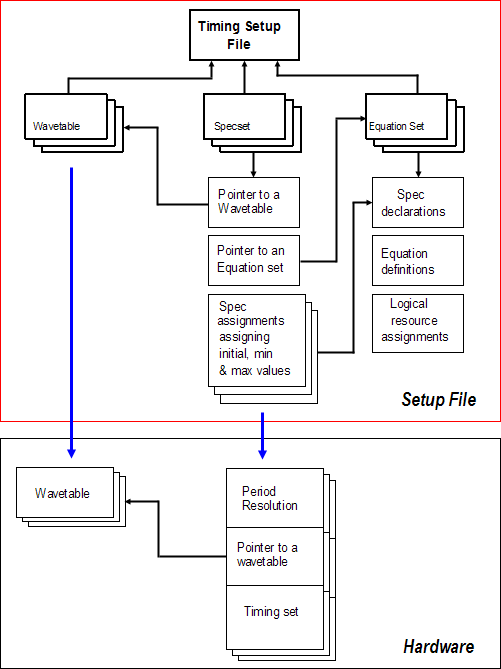

Equation based timing setup
Defining a timing setup involves the following tasks:
- Generate a Wavetable.
- Generate a Timing Equation Set.
- Generate a Timing Specification, linking the wavetables and timing equations.
The following figure shows the components of a timing setup.

Elements of the equations based timing setup
to set up timing based on equations, you use the following elements:
- Expressions
- equation variables
- spec variables
These elements have the same definition and syntax as those of level equation.
Functional changes
- Introduced before SmarTest 6.3.2